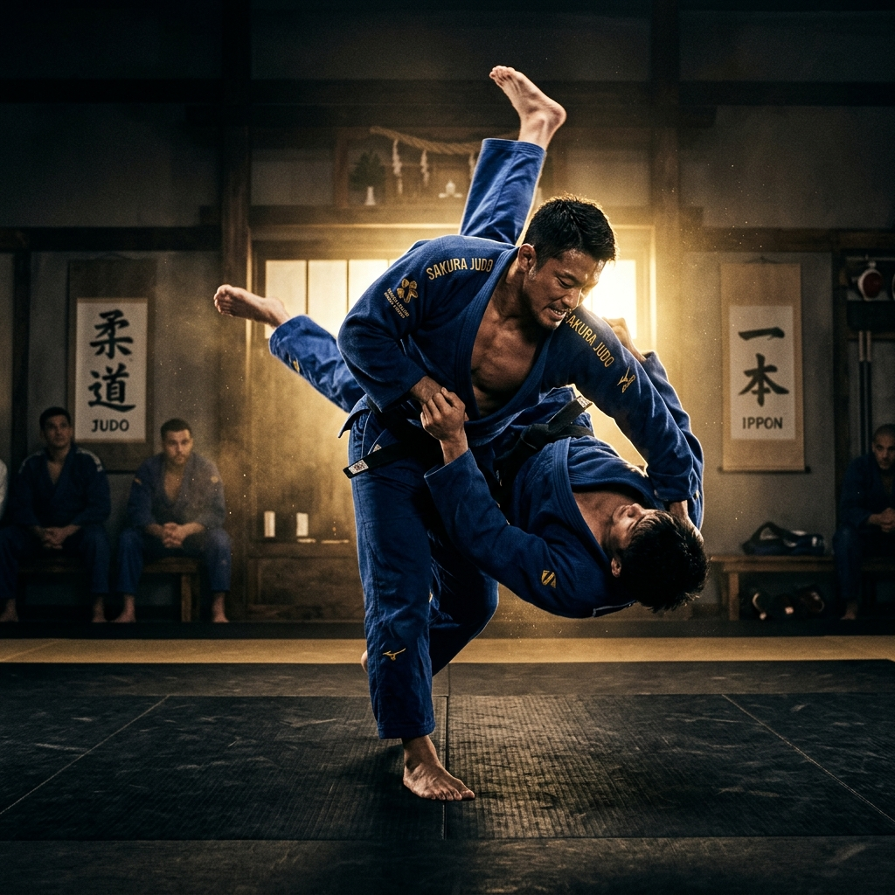
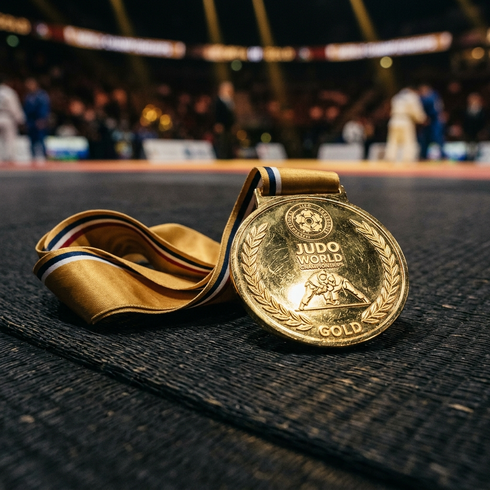
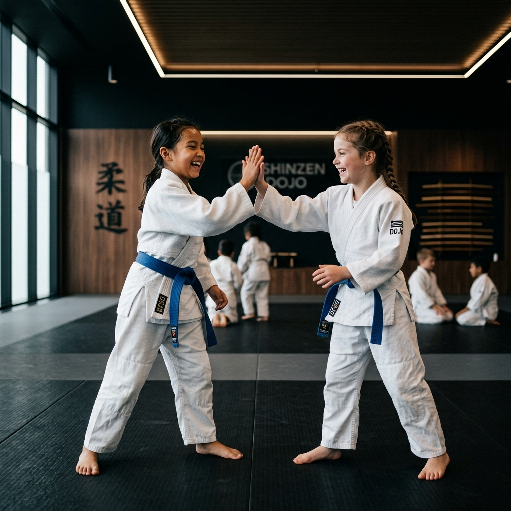
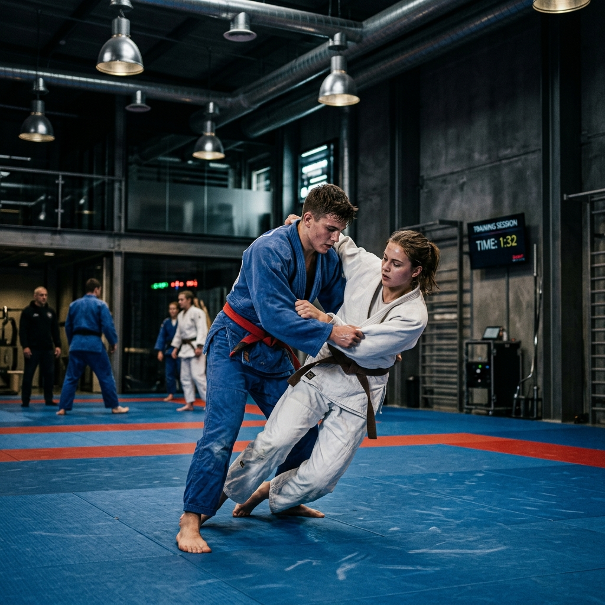
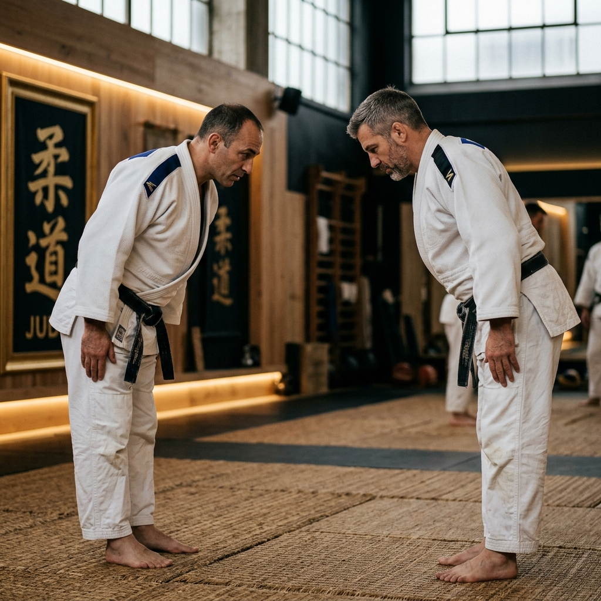
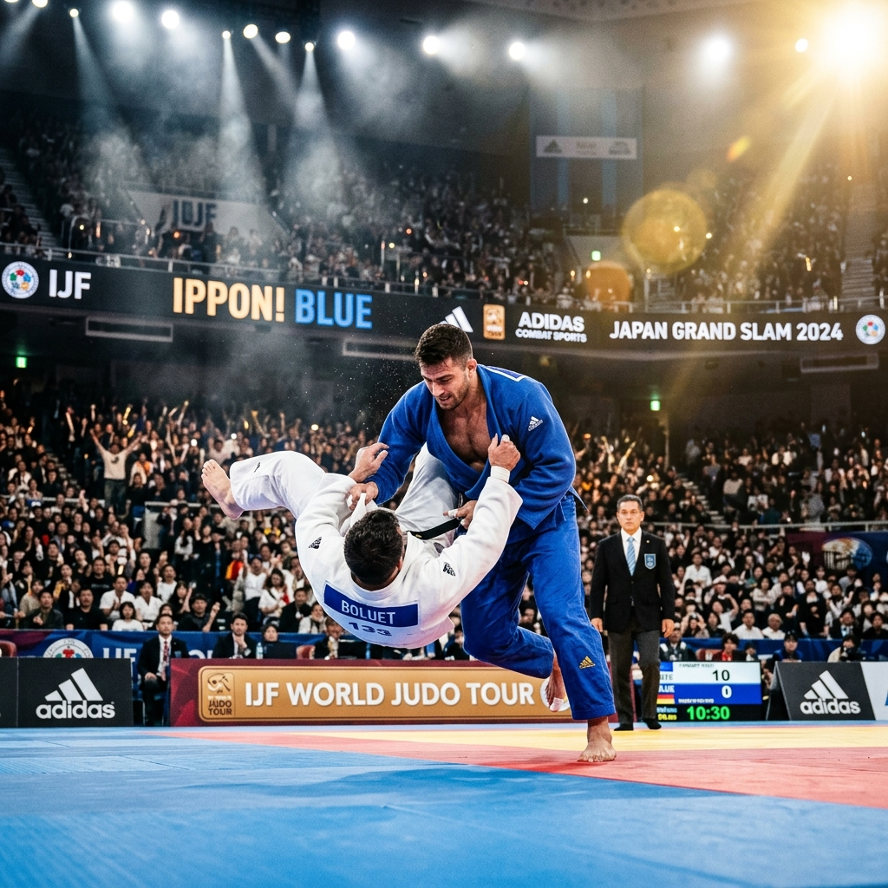
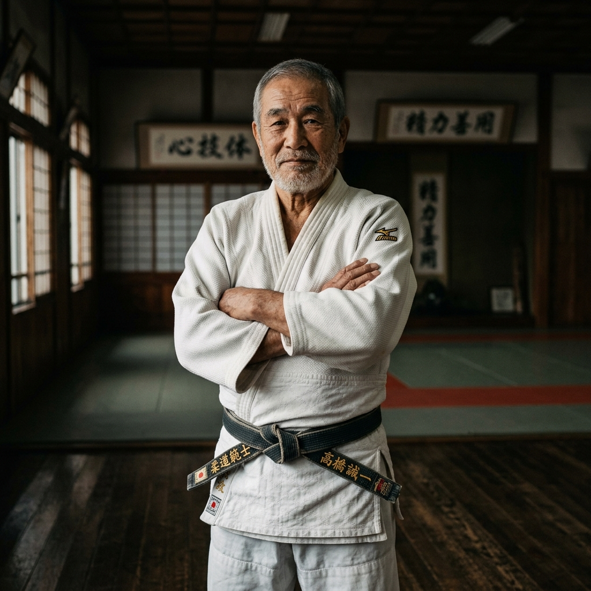

Disciplina, respeito e evolução contínua através do judô tradicional japonês de alto rendimento. Legado sólido em Campo Grande - MS desde 1979.
Fundado em 1979 pelo respeitado Sensei Celso Rocha, o Judô Clube Rocha (JCR) nasceu com a missão clara de transmitir o verdadeiro espírito do Judô: a harmonia entre o desenvolvimento do corpo, da mente e do caráter social.
Ao longo de mais de quatro décadas, consolidamo-nos como um dos principais polos esportivos de alto rendimento no estado do Mato Grosso do Sul. Nosso dojo de elite combina as técnicas mais modernas de preparação atlética com a filosofia oriental mais pura do criador do Judô, Jigoro Kano.

Muito mais que um esporte de combate, o judô é um método pedagógico completo que constrói indivíduos fortes e resilientes para a vida cotidiana.
Ensinamos a consistência e o cumprimento das normas do tatame como base para o sucesso pessoal do judoca.
O cumprimento mútuo (Reiho) cultiva a reverência sagrada pelos colegas de treino, adversários e mestres.
Dominar as técnicas de projeção e queda capacita o aluno a enfrentar qualquer obstáculo com coragem.
Aprenda a desarmar e imobilizar oponentes usando o peso do próprio adversário de maneira inteligente.
Melhora extraordinária na força muscular, agilidade, equilíbrio, flexibilidade e capacidade cardiovascular.
Exercitamos a percepção espacial e a tomada de decisão ultra-rápida na frações de segundo das lutas.
Desenvolvemos o autocontrole frente a situações de extrema pressão, reduzindo o estresse e a ansiedade.
Integração de alunos de todas as idades num ecossistema de companheirismo e cooperação saudável.
Programas de judô desenvolvidos especificamente para cada faixa etária e nível de proficiência esportiva, sob constante acompanhamento de especialistas.

Nosso programa de judô infantil foca no desenvolvimento motor amplo, na coordenação espacial e no ensinamento lúdico das quedas e técnicas básicas. A criança aprende o respeito, a amizade e a disciplina brincando, construindo uma autoestima inabalável.

A adolescência é uma fase de transformações complexas. O Judô Clube Rocha fornece aos jovens uma válvula de escape energética ultra-positiva, promovendo o autocontrole marcial, o espírito de cooperação, o combate ao sedentarismo e uma blindagem contra influências negativas externas.

Perfeito para quem busca descompressão total do estresse corporativo cotidiano, queima calórica massiva (até 800 kcal por treino) e técnicas funcionais de autodefesa. Aqui, homens e mulheres treinam num ambiente saudável e extremamente acolhedor.

A divisão lendária da JCR. Voltada exclusivamente para atletas filiados à Federação de Judô de MS, que buscam o pódio olímpico, estadual e nacional. Nosso programa integra táticas refinadas de Kumikata (pegada), preparação de força física explosiva e mentoria psicológica competitiva.
Confira o registro visual dos nossos treinos intensos, medalhas conquistadas, exames de faixas tradicionais e o espírito inabalável da nossa família.
Formação marcial e pedagógica de elite. Nossos professores são certificados pela CBJ e possuem vasta experiência na formação de faixas pretas e campeões.

Faixa Preta 6º Dan (Kodansha). Fundou o Judô Clube Rocha em 1979 com a visão de forjar cidadãos de bem e competidores indomáveis. Já graduou mais de 50 faixas pretas oficiais e é uma das maiores referências marciais do MS.
Faixa Preta 3º Dan. Campeão Brasileiro de Veteranos e especialista em biomecânica aplicada ao judô competitivo moderno. Responsável direto pelo programa tático avançado da nossa equipe de elite.
Faixa Preta 2º Dan. Especialista em pedagogia da atividade motora infantil e desenvolvimento socioemocional. Desenvolveu a metodologia exclusiva de judô escolar que é referência no estado.
O testemunho de alunos, pais e atletas que transformaram suas vidas, disciplina e saúde através do método Judô Clube Rocha.
Agende sua primeira aula experimental gratuita e venha sentir a energia de campeão no tatame do Judô Clube Rocha.